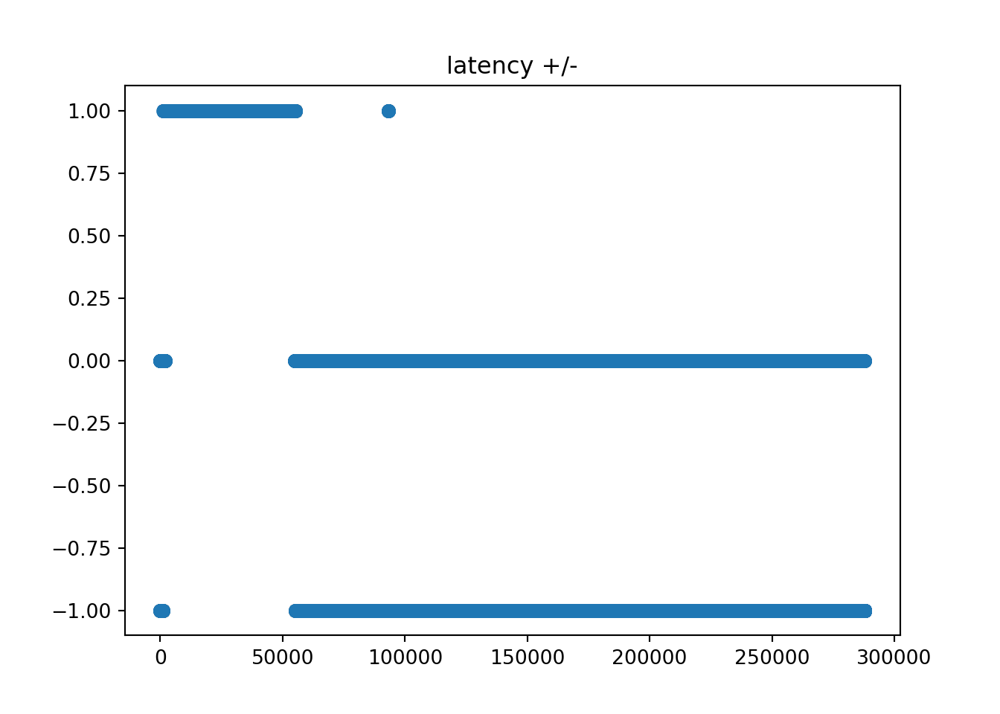
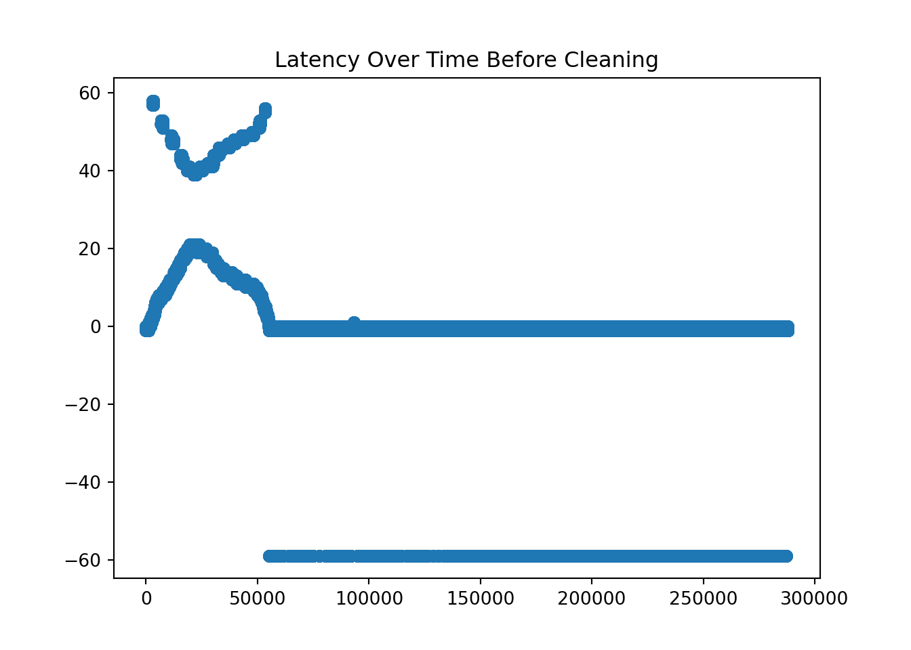
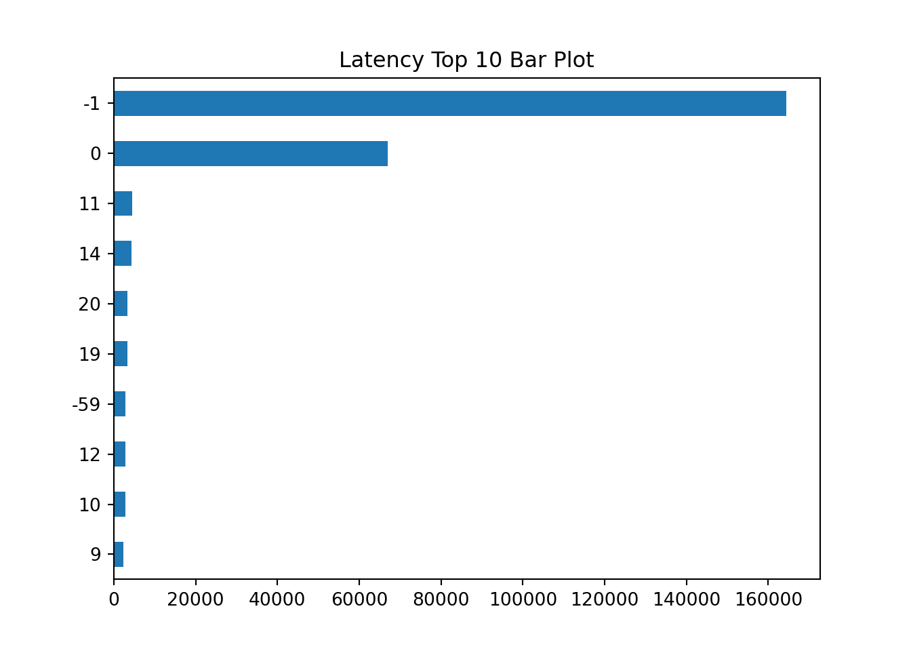
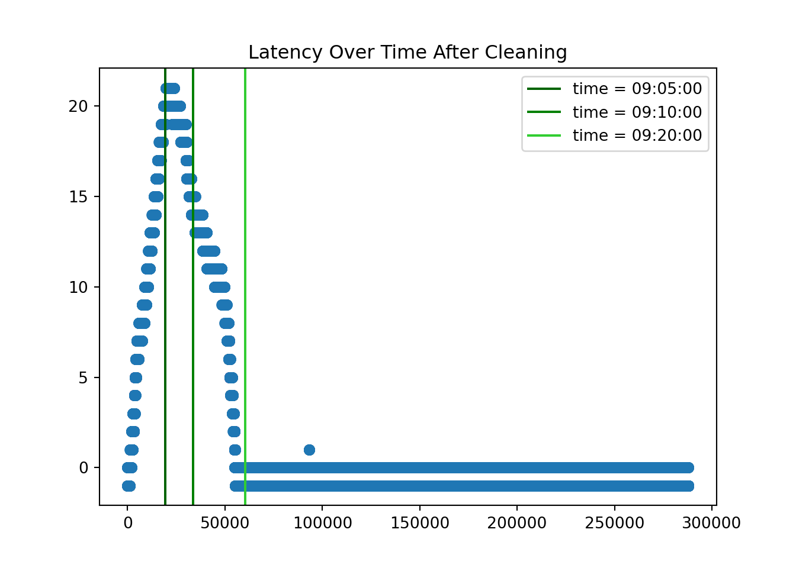
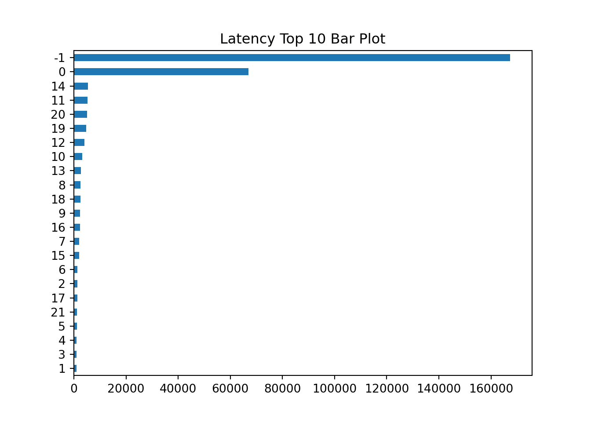
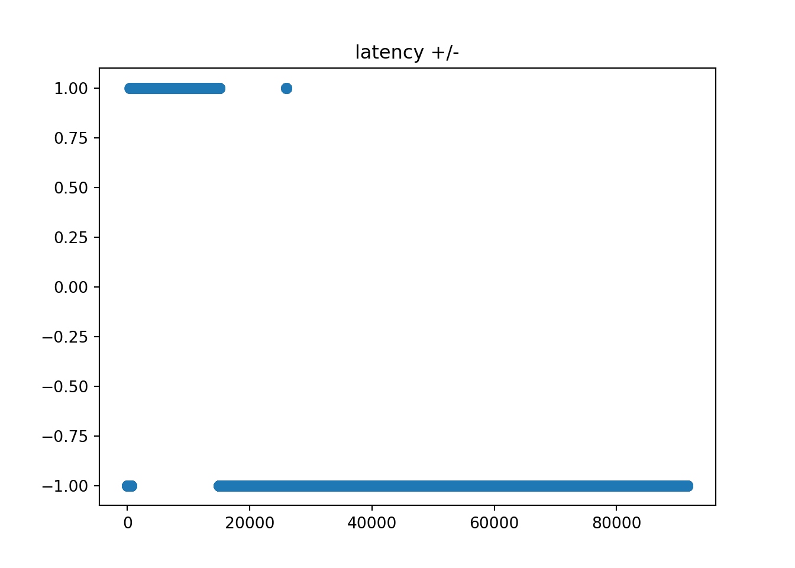
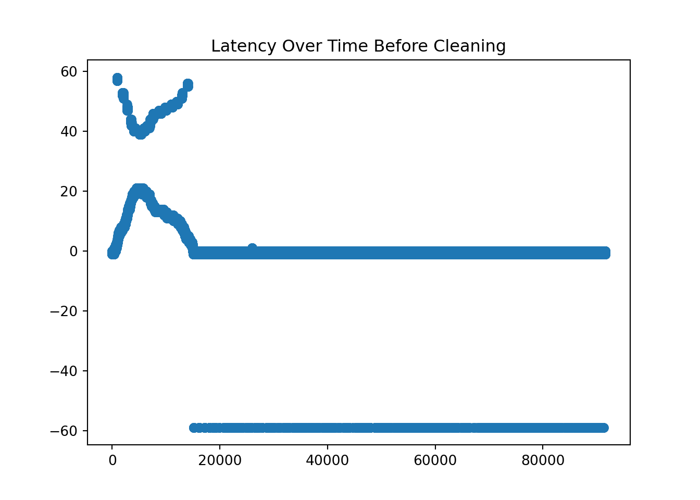
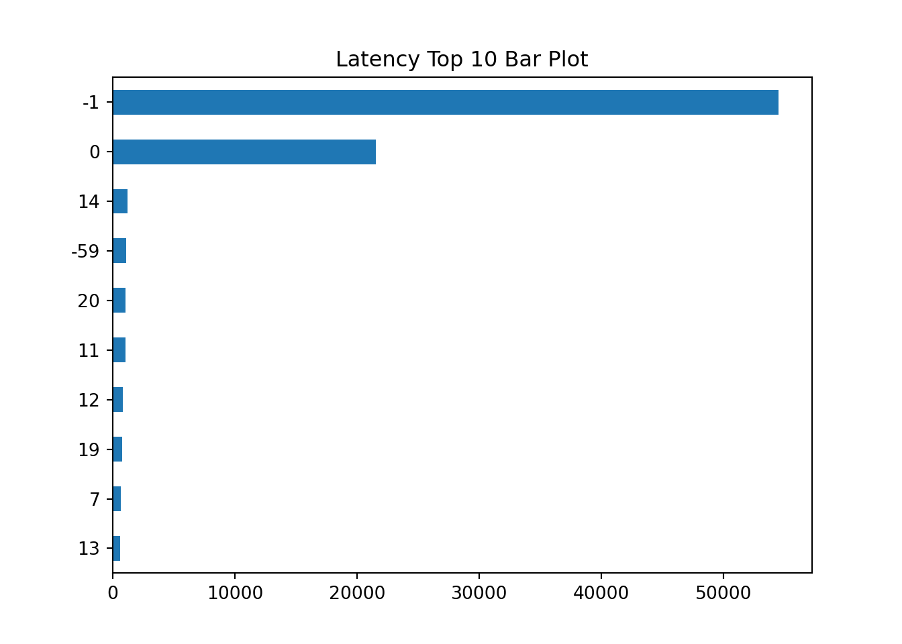
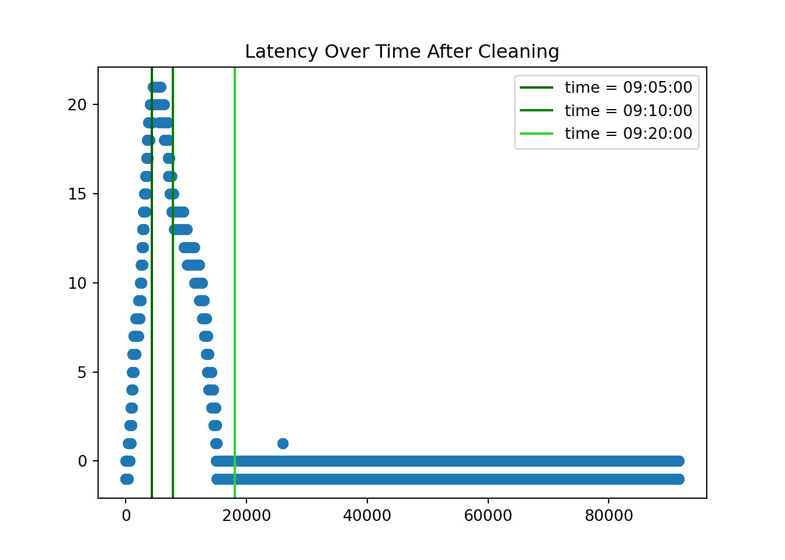
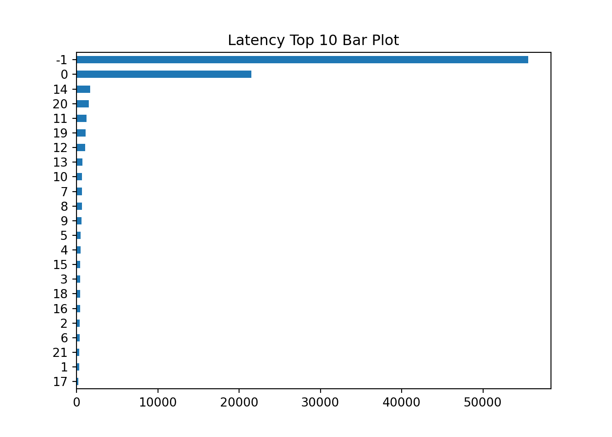

Note: 이 페이지는 키움 API를 통해 Real Time Tick Data를 받아온 후 데이터를 클리닝 하는 과정을 보여주고 있습니다. 오류 및 문의사항은 metrics@kakao.com 으로 메일주시면 감사하겠습니다
데이터 자체에 대한 질문과 데이터 제공에 관한 문의는 000 으로 메일 주시면 감사하겠습니다
R code 블럭과 Python code 블럭은 다음과 같이 색깔로 구분하겠습니다. 결과창은 동일하게 Ivory 색 블럭으로 표시됩니다.
# "이것은 R 코드 입니다."# "이것은 Python 코드 입니다."- Package
library(dplyr)
library(tidyverse)
library(DT)
library(reticulate) # Python
#py_install(packages = "matplotlib")
#py_install(packages = "pandas")
#py_install(packages = 'dfply')
options(scipen=999)
options(max.print = 99999999)
options(digits=10)Import Data
Check NA
wd = "G:/공유 드라이브/Project_TBD/Stock_Data/real_time/kiwoom_stocks/2021-01-14"
wd2 = "/Volumes/GoogleDrive/공유 드라이브/Project_TBD/Stock_Data/real_time/kiwoom_stocks/2021-01-19"
fn = list.files(path = wd2,
pattern = '.*stocks_trade.*\\.csv') # 마지막 30분 틱데이터 가지고오기
path = paste(wd2,fn[1:4],sep = '/')
# data = readr::read_csv(file = path,
# col_names = c('code','trade_date','timestamp','price','open','high','low',
# 'size','cum_size','ask1','bid1'))
tbl =
list.files(path = wd2, pattern = '.*stocks_trade.*\\.csv')[2:8] %>%
map_df(~readr::read_csv(paste(wd2,.,sep = '/'),
col_names = c('code','trade_date','timestamp','price','open','high','low','size','cum_size','ask1','bid1','rotation','bs_ration', 'mkt_type', 'mkt_cap'),
col_types = cols(.default="d", code = "c")
)
)
sum(is.na(tbl))## [1] 0import numpy as np
import matplotlib.pyplot as plt
import pandas as pd
from datetime import datetime, timedelta
#py_install(packages = "matplotlib")
#py_install(packages = "pandas")
pd.options.display.float_format = '{:.4f}'.format
pd.set_option('display.max_rows', 100)
df_py = r.tbl
df_py.head()## code trade_date timestamp ... bs_ration mkt_type mkt_cap
## 0 279540 90000.0000 20210119090000.1250 ... 0.0000 2.0000 149.0000
## 1 530071 90001.0000 20210119090000.3945 ... 0.0000 2.0000 478.0000
## 2 002380 90001.0000 20210119090000.4023 ... 16.6700 2.0000 17640.0000
## 3 071950 90001.0000 20210119090000.4766 ... 500.0000 2.0000 394.0000
## 4 004140 90001.0000 20210119090000.6758 ... 500.0000 2.0000 1744.0000
##
## [5 rows x 15 columns]Task1: 레이턴시 체크 및 Buy/Sell 구분하기
Samsung Stock
- KOSPI Code for Samsung Electronics is ‘005930’
ss = df_py[df_py.code == '005930'].reset_index(drop=True)
ss.shape## (287902, 15)1. Use time object in python
Delete rows where “second” does not lie between 0 and 59.
Substring the timstamp to get each time component.
ss = ss[ss['timestamp'].apply(lambda x: int(str(int(x*1000000))[12:14])) < 60 ]
ss = ss.assign( microsecond = ss['timestamp'].apply(lambda x: str(int(x*1000000))[14:20]),
second = ss['timestamp'].apply(lambda x: str(int(x*1000000))[12:14]),
minute = ss['timestamp'].apply(lambda x: str(int(x*1000000))[10:12]),
hour = ss['timestamp'].apply(lambda x: str(int(x*1000000))[8:10]),
day = ss['timestamp'].apply(lambda x: str(int(x*1000000))[6:8]),
month = ss['timestamp'].apply(lambda x: str(int(x*1000000))[4:6]),
year = ss['timestamp'].apply(lambda x: str(int(x*1000000))[0:4]),
kw_time = ss['trade_date'].apply(lambda x: str(int(x))))
ss.head()## code trade_date timestamp price ... day month year kw_time
## 0 005930 90009.0000 20210119090008.6914 84500.0000 ... 19 01 2021 90009
## 1 005930 90009.0000 20210119090008.6914 84600.0000 ... 19 01 2021 90009
## 2 005930 90009.0000 20210119090008.7734 84500.0000 ... 19 01 2021 90009
## 3 005930 90009.0000 20210119090008.8398 84600.0000 ... 19 01 2021 90009
## 4 005930 90009.0000 20210119090008.8594 84600.0000 ... 19 01 2021 90009
##
## [5 rows x 23 columns]- Transform data type to str to use substring to make the format like “%Y-%m-%d %H:%M:%S.%f”
- We calculate the latency by subtracting ‘trade_date’ from the ‘timestamp’
ss['time'] = ss.apply(lambda x: datetime(
year = int(x['year']),
month = int(x['month']),
day = int(x['day']),
hour = int(x['hour']),
minute = int(x['minute']),
second = int(x['second']),
microsecond = int(x['microsecond'])), #.strftime("%H:%M:%S.%f")[:-3],
axis=1)
ss.head(10)## code trade_date ... kw_time time
## 0 005930 90009.0000 ... 90009 2021-01-19 09:00:08.690688
## 1 005930 90009.0000 ... 90009 2021-01-19 09:00:08.690688
## 2 005930 90009.0000 ... 90009 2021-01-19 09:00:08.772608
## 3 005930 90009.0000 ... 90009 2021-01-19 09:00:08.838144
## 4 005930 90009.0000 ... 90009 2021-01-19 09:00:08.858624
## 5 005930 90009.0000 ... 90009 2021-01-19 09:00:08.862720
## 6 005930 90009.0000 ... 90009 2021-01-19 09:00:08.879104
## 7 005930 90009.0000 ... 90009 2021-01-19 09:00:08.911872
## 8 005930 90009.0000 ... 90009 2021-01-19 09:00:08.944640
## 9 005930 90009.0000 ... 90009 2021-01-19 09:00:08.973312
##
## [10 rows x 24 columns]2. Calculate latency and clean it [레이턴시 계산 및 정리]
- Calculate the latency by subtracting the time provided by Kiwoom dataset and self-recorded time at the moment of processing the data delivered through the Kiwoom API.
오전 8시 9시 앞에 ’0’을 붙여주기
ss['kw_time'].apply(lambda x: x[0:2]).value_counts()## 10 46168
## 90 33512
## 11 32071
## 12 29434
## 91 26868
## 14 24797
## 13 23095
## 93 19864
## 92 14581
## 95 13809
## 94 13527
## 15 10169
## Name: kw_time, dtype: int64ss['kw_time'] = ss.kw_time.apply(lambda x: '0' + x if ((x[0]=='8') | (x[0]=='9')) else x)
ss['kw_time'].apply(lambda x: x[0:2]).value_counts()## 09 122161
## 10 46168
## 11 32071
## 12 29434
## 14 24797
## 13 23095
## 15 10169
## Name: kw_time, dtype: int64- 키움 타임 만들기
ss['kwtime'] = ss.apply(lambda x: datetime(year = int(x['year']),
month = int(x['month']),
day = int(x['day']),
hour = int(x['kw_time'][0:2]),
minute = int(x['kw_time'][2:4]),
second = int(x['kw_time'][4:6])),
axis = 1
)Latency +/- 정보 가지고 오기
- 인 경우, 로컬 타임이 키움 타임보다 늦는 경우
- 인 경우, 로컬 타임이 키움 타임보다 빠른 경우 (weird)
ss['latency_ind']=ss.apply(lambda x: 1 if (int(str(int(x['timestamp']*1000000))[8:14]) > x['trade_date']) else
0 if (int(str(int(x['timestamp']*1000000))[8:14]) == x['trade_date']) else -1, axis=1)plt.scatter(ss['latency_ind'].reset_index().index,ss['latency_ind'])
plt.title('latency +/-')
Latency Value 가지고 오기
ss['latency_val'] = ss.apply(lambda x: abs(x['time'].second - x['kwtime'].second),
axis =1
)
ss['latency'] = ss['latency_val']*ss['latency_ind']
ss1 = ss[['time', 'kwtime', 'kw_time', 'hour', 'minute', 'second', 'price','size','ask1','bid1','latency']]
ss1.head(10)## time kwtime ... bid1 latency
## 0 2021-01-19 09:00:08.690688 2021-01-19 09:00:09 ... 84500.0000 -1
## 1 2021-01-19 09:00:08.690688 2021-01-19 09:00:09 ... 84500.0000 -1
## 2 2021-01-19 09:00:08.772608 2021-01-19 09:00:09 ... 84500.0000 -1
## 3 2021-01-19 09:00:08.838144 2021-01-19 09:00:09 ... 84500.0000 -1
## 4 2021-01-19 09:00:08.858624 2021-01-19 09:00:09 ... 84500.0000 -1
## 5 2021-01-19 09:00:08.862720 2021-01-19 09:00:09 ... 84500.0000 -1
## 6 2021-01-19 09:00:08.879104 2021-01-19 09:00:09 ... 84500.0000 -1
## 7 2021-01-19 09:00:08.911872 2021-01-19 09:00:09 ... 84500.0000 -1
## 8 2021-01-19 09:00:08.944640 2021-01-19 09:00:09 ... 84500.0000 -1
## 9 2021-01-19 09:00:08.973312 2021-01-19 09:00:09 ... 84500.0000 -1
##
## [10 rows x 11 columns]plt.scatter(ss1.reset_index().index, ss1.latency)
plt.title('Latency Over Time Before Cleaning')
ss1.latency.value_counts().head(10).iloc[::-1].plot.barh(stacked=True)
plt.title('Latency Top 10 Bar Plot')
ss1.latency.value_counts().index## Int64Index([ -1, 0, 11, 14, 20, 19, -59, 12, 10, 9, 13, 16, 18,
## 7, 40, 8, 41, 15, 6, 48, 2, 5, 46, 52, 4, 43,
## 1, 3, 49, 21, 47, 45, 42, 39, 50, 17, 44, 53, 57,
## 58, 56, 55, 51],
## dtype='int64')- Check the time where large discrepancy happened!
over 30 or not!
- We assume that when the latency is minus value, the maximum time difference is 1.
- 음의 레이턴시가 나오는 경우는 최악의 경우 1초 빠르게 record 하는 경우!!
- When latency is a number x (e.g. 59) over 30, the actual latency is 60 - x
- When latency is a number x (e.g. 20) below 30 and over 0, the actual latency is x
- When latency is a number x (e.g. -59) below (let’s say) -5, the actual latency is -(60 + x)
- We can check it as in below.
ss1[ss1.latency == -59][['kwtime','hour','minute','second','latency']]## kwtime hour minute second latency
## 55333 2021-01-19 09:17:00 09 16 59 -59
## 55334 2021-01-19 09:17:00 09 16 59 -59
## 55335 2021-01-19 09:17:00 09 16 59 -59
## 55336 2021-01-19 09:17:00 09 16 59 -59
## 55337 2021-01-19 09:17:00 09 16 59 -59
## ... ... ... ... ... ...
## 287226 2021-01-19 15:19:00 15 18 59 -59
## 287227 2021-01-19 15:19:00 15 18 59 -59
## 287231 2021-01-19 15:19:00 15 18 59 -59
## 287232 2021-01-19 15:19:00 15 18 59 -59
## 287233 2021-01-19 15:19:00 15 18 59 -59
##
## [2895 rows x 5 columns]ss1[ss1.latency == 40][['kwtime','hour','minute','second','latency']]## kwtime hour minute second latency
## 18414 2021-01-19 09:04:40 09 05 00 40
## 18428 2021-01-19 09:04:40 09 05 00 40
## 18440 2021-01-19 09:04:40 09 05 00 40
## 18441 2021-01-19 09:04:40 09 05 00 40
## 18442 2021-01-19 09:04:40 09 05 00 40
## ... ... ... ... ... ...
## 25279 2021-01-19 09:06:59 09 07 19 40
## 25280 2021-01-19 09:06:59 09 07 19 40
## 25281 2021-01-19 09:06:59 09 07 19 40
## 25282 2021-01-19 09:06:59 09 07 19 40
## 25283 2021-01-19 09:06:59 09 07 19 40
##
## [1670 rows x 5 columns]ss1[ss1.latency == 39][['kwtime','hour','minute','second','latency']]## kwtime hour minute second latency
## 21418 2021-01-19 09:05:39 09 06 00 39
## 21419 2021-01-19 09:05:39 09 06 00 39
## 21425 2021-01-19 09:05:39 09 06 00 39
## 21426 2021-01-19 09:05:39 09 06 00 39
## 21427 2021-01-19 09:05:39 09 06 00 39
## ... ... ... ... ... ...
## 22400 2021-01-19 09:05:59 09 06 20 39
## 22401 2021-01-19 09:05:59 09 06 20 39
## 22408 2021-01-19 09:05:59 09 06 20 39
## 22409 2021-01-19 09:05:59 09 06 20 39
## 22410 2021-01-19 09:05:59 09 06 20 39
##
## [489 rows x 5 columns]ss1[ss1.latency == 21][['kwtime','hour','minute','second','latency']]## kwtime hour minute second latency
## 19651 2021-01-19 09:05:04 09 05 25 21
## 19653 2021-01-19 09:05:03 09 05 24 21
## 19661 2021-01-19 09:05:04 09 05 25 21
## 19675 2021-01-19 09:05:04 09 05 25 21
## 19676 2021-01-19 09:05:04 09 05 25 21
## ... ... ... ... ... ...
## 23855 2021-01-19 09:06:29 09 06 50 21
## 23873 2021-01-19 09:06:30 09 06 51 21
## 23888 2021-01-19 09:06:30 09 06 51 21
## 23981 2021-01-19 09:06:32 09 06 53 21
## 23982 2021-01-19 09:06:32 09 06 53 21
##
## [689 rows x 5 columns]ss1[ss1.latency == 20][['kwtime','hour','minute','second','latency']]## kwtime hour minute second latency
## 18335 2021-01-19 09:04:38 09 04 58 20
## 18350 2021-01-19 09:04:38 09 04 58 20
## 18371 2021-01-19 09:04:39 09 04 59 20
## 18380 2021-01-19 09:04:39 09 04 59 20
## 19485 2021-01-19 09:05:00 09 05 20 20
## ... ... ... ... ... ...
## 27060 2021-01-19 09:07:30 09 07 50 20
## 27061 2021-01-19 09:07:30 09 07 50 20
## 27062 2021-01-19 09:07:30 09 07 50 20
## 27080 2021-01-19 09:07:31 09 07 51 20
## 27087 2021-01-19 09:07:31 09 07 51 20
##
## [3389 rows x 5 columns]Correct the wrongly calculated latency
ss2 = ss1.copy()
ss2['latency']=ss1.apply(lambda x: 60-x['latency'] if (x['latency'] > 30) else \
(-(60+x['latency']) if (x['latency']<-5) else x['latency']),axis=1)# x coordinates for the lines
xcoords = [ ss2.index[ss2['kw_time'] == '090500'][0],
ss2.index[ss2['kw_time'] == '091000'][0],
ss2.index[ss2['kw_time'] == '092000'][0] ]
# colors for the lines
colors = ['darkgreen','green','limegreen']
time = ['09:05:00','09:10:00','09:20:00']
plt.scatter(ss2.reset_index().index, ss2.latency)
for xc,c,time in zip(xcoords,colors,time):
plt.axvline(x=xc, label='time = {}'.format(time), c=c)
plt.legend()
plt.title('Latency Over Time After Cleaning')
ss2.latency.value_counts().iloc[::-1].plot.barh(stacked=True)
plt.title('Latency Top 10 Bar Plot')
Hyundai Car Stock
- KOSPI Code for Samsung Electronics is ‘005380’
ss = df_py[df_py.code == '005380'].reset_index(drop=True)
ss.shape## (91606, 15)1. Use time object in python
Delete rows where “second” does not lie between 0 and 59.
Substring the timstamp to get each time component.
ss = ss[ss['timestamp'].apply(lambda x: int(str(int(x*1000000))[12:14])) < 60 ]
ss = ss.assign( microsecond = ss['timestamp'].apply(lambda x: str(int(x*1000000))[14:20]),
second = ss['timestamp'].apply(lambda x: str(int(x*1000000))[12:14]),
minute = ss['timestamp'].apply(lambda x: str(int(x*1000000))[10:12]),
hour = ss['timestamp'].apply(lambda x: str(int(x*1000000))[8:10]),
day = ss['timestamp'].apply(lambda x: str(int(x*1000000))[6:8]),
month = ss['timestamp'].apply(lambda x: str(int(x*1000000))[4:6]),
year = ss['timestamp'].apply(lambda x: str(int(x*1000000))[0:4]),
kw_time = ss['trade_date'].apply(lambda x: str(int(x))))
ss.head()## code trade_date timestamp price ... day month year kw_time
## 0 005380 90003.0000 20210119090002.7812 244000.0000 ... 19 01 2021 90003
## 1 005380 90003.0000 20210119090002.8164 244500.0000 ... 19 01 2021 90003
## 2 005380 90003.0000 20210119090002.8242 244000.0000 ... 19 01 2021 90003
## 3 005380 90003.0000 20210119090002.8867 244000.0000 ... 19 01 2021 90003
## 4 005380 90003.0000 20210119090002.9023 244000.0000 ... 19 01 2021 90003
##
## [5 rows x 23 columns]- Transform data type to str to use substring to make the format like “%Y-%m-%d %H:%M:%S.%f”
- We calculate the latency by subtracting ‘trade_date’ from the ‘timestamp’
ss['time'] = ss.apply(lambda x: datetime(
year = int(x['year']),
month = int(x['month']),
day = int(x['day']),
hour = int(x['hour']),
minute = int(x['minute']),
second = int(x['second']),
microsecond = int(x['microsecond'])), #.strftime("%H:%M:%S.%f")[:-3],
axis=1)
ss.head(10)## code trade_date ... kw_time time
## 0 005380 90003.0000 ... 90003 2021-01-19 09:00:02.780160
## 1 005380 90003.0000 ... 90003 2021-01-19 09:00:02.817024
## 2 005380 90003.0000 ... 90003 2021-01-19 09:00:02.825216
## 3 005380 90003.0000 ... 90003 2021-01-19 09:00:02.886656
## 4 005380 90003.0000 ... 90003 2021-01-19 09:00:02.903040
## 5 005380 90003.0000 ... 90003 2021-01-19 09:00:02.829312
## 6 005380 90003.0000 ... 90003 2021-01-19 09:00:02.882560
## 7 005380 90003.0000 ... 90003 2021-01-19 09:00:03.017728
## 8 005380 90003.0000 ... 90003 2021-01-19 09:00:03.099648
## 9 005380 90003.0000 ... 90003 2021-01-19 09:00:02.796544
##
## [10 rows x 24 columns]2. Calculate latency and clean it [레이턴시 계산 및 정리]
- Calculate the latency by subtracting the time provided by Kiwoom dataset and self-recorded time at the moment of processing the data delivered through the Kiwoom API.
오전 8시 9시 앞에 ’0’을 붙여주기
ss['kw_time'].apply(lambda x: x[0:2]).value_counts()## 10 17444
## 11 11003
## 14 10321
## 91 10275
## 12 8039
## 90 7765
## 13 7490
## 92 4983
## 15 4589
## 94 4046
## 93 3417
## 95 2231
## Name: kw_time, dtype: int64ss['kw_time'] = ss.kw_time.apply(lambda x: '0' + x if ((x[0]=='8') | (x[0]=='9')) else x)
ss['kw_time'].apply(lambda x: x[0:2]).value_counts()## 09 32717
## 10 17444
## 11 11003
## 14 10321
## 12 8039
## 13 7490
## 15 4589
## Name: kw_time, dtype: int64- 키움 타임 만들기
ss['kwtime'] = ss.apply(lambda x: datetime(year = int(x['year']),
month = int(x['month']),
day = int(x['day']),
hour = int(x['kw_time'][0:2]),
minute = int(x['kw_time'][2:4]),
second = int(x['kw_time'][4:6])),
axis = 1
)Latency +/- 정보 가지고 오기
- 인 경우, 로컬 타임이 키움 타임보다 늦는 경우
- 인 경우, 로컬 타임이 키움 타임보다 빠른 경우 (weird)
ss['latency_ind']=ss.apply(lambda x: 1 if (int(str(int(x['timestamp']*1000000))[8:14]) > x['trade_date']) else -1,
axis=1)plt.scatter(ss['latency_ind'].reset_index().index,ss['latency_ind'])
plt.title('latency +/-')
Latency Value 가지고 오기
ss['latency_val'] = ss.apply(lambda x: abs(x['time'].second - x['kwtime'].second),
axis =1
)
ss['latency'] = ss['latency_val']*ss['latency_ind']
ss1 = ss[['time', 'kwtime', 'kw_time', 'hour', 'minute', 'second', 'price','size','ask1','bid1','latency']]
ss1.head(10)## time kwtime ... bid1 latency
## 0 2021-01-19 09:00:02.780160 2021-01-19 09:00:03 ... 244000.0000 -1
## 1 2021-01-19 09:00:02.817024 2021-01-19 09:00:03 ... 244000.0000 -1
## 2 2021-01-19 09:00:02.825216 2021-01-19 09:00:03 ... 244000.0000 -1
## 3 2021-01-19 09:00:02.886656 2021-01-19 09:00:03 ... 244000.0000 -1
## 4 2021-01-19 09:00:02.903040 2021-01-19 09:00:03 ... 244000.0000 -1
## 5 2021-01-19 09:00:02.829312 2021-01-19 09:00:03 ... 244000.0000 -1
## 6 2021-01-19 09:00:02.882560 2021-01-19 09:00:03 ... 244000.0000 -1
## 7 2021-01-19 09:00:03.017728 2021-01-19 09:00:03 ... 244000.0000 0
## 8 2021-01-19 09:00:03.099648 2021-01-19 09:00:03 ... 244000.0000 0
## 9 2021-01-19 09:00:02.796544 2021-01-19 09:00:03 ... 244000.0000 -1
##
## [10 rows x 11 columns]plt.scatter(ss1.reset_index().index, ss1.latency)
plt.title('Latency Over Time Before Cleaning')
ss1.latency.value_counts().head(10).iloc[::-1].plot.barh(stacked=True)
plt.title('Latency Top 10 Bar Plot')
ss1.latency.value_counts().index## Int64Index([ -1, 0, 14, -59, 20, 11, 12, 19, 7, 13, 10, 9, 5,
## 4, 40, 46, 3, 16, 8, 6, 2, 41, 18, 15, 1, 52,
## 48, 21, 49, 43, 39, 47, 45, 42, 50, 17, 53, 44, 56,
## 58, 55, 57, 51],
## dtype='int64')- Check the time where large discrepancy happened!
over 30 or not!
- We assume that when the latency is minus value, the maximum time difference is 1.
- 음의 레이턴시가 나오는 경우는 최악의 경우 1초 빠르게 record 하는 경우!!
- When latency is a number x (e.g. 59) over 30, the actual latency is 60 - x
- When latency is a number x (e.g. 20) below 30 and over 0, the actual latency is x
- When latency is a number x (e.g. -59) below (let’s say) -5, the actual latency is -(60 + x)
- We can check it as in below.
ss1[ss1.latency == -59][['kwtime','hour','minute','second','latency']]## kwtime hour minute second latency
## 15120 2021-01-19 09:17:00 09 16 59 -59
## 15121 2021-01-19 09:17:00 09 16 59 -59
## 15122 2021-01-19 09:17:00 09 16 59 -59
## 15128 2021-01-19 09:17:00 09 16 59 -59
## 15129 2021-01-19 09:17:00 09 16 59 -59
## ... ... ... ... ... ...
## 91239 2021-01-19 15:19:00 15 18 59 -59
## 91240 2021-01-19 15:19:00 15 18 59 -59
## 91241 2021-01-19 15:19:00 15 18 59 -59
## 91242 2021-01-19 15:19:00 15 18 59 -59
## 91251 2021-01-19 15:19:00 15 18 59 -59
##
## [1078 rows x 5 columns]ss1[ss1.latency == 40][['kwtime','hour','minute','second','latency']]## kwtime hour minute second latency
## 4046 2021-01-19 09:04:42 09 05 02 40
## 4047 2021-01-19 09:04:42 09 05 02 40
## 4053 2021-01-19 09:04:42 09 05 02 40
## 4054 2021-01-19 09:04:42 09 05 02 40
## 4055 2021-01-19 09:04:42 09 05 02 40
## ... ... ... ... ... ...
## 6034 2021-01-19 09:06:59 09 07 19 40
## 6038 2021-01-19 09:06:59 09 07 19 40
## 6039 2021-01-19 09:06:59 09 07 19 40
## 6040 2021-01-19 09:06:59 09 07 19 40
## 6043 2021-01-19 09:06:59 09 07 19 40
##
## [449 rows x 5 columns]ss1[ss1.latency == 39][['kwtime','hour','minute','second','latency']]## kwtime hour minute second latency
## 5106 2021-01-19 09:05:39 09 06 00 39
## 5107 2021-01-19 09:05:39 09 06 00 39
## 5108 2021-01-19 09:05:39 09 06 00 39
## 5111 2021-01-19 09:05:39 09 06 00 39
## 5112 2021-01-19 09:05:39 09 06 00 39
## ... ... ... ... ... ...
## 5406 2021-01-19 09:05:58 09 06 19 39
## 5408 2021-01-19 09:05:58 09 06 19 39
## 5413 2021-01-19 09:05:59 09 06 20 39
## 5414 2021-01-19 09:05:59 09 06 20 39
## 5417 2021-01-19 09:05:59 09 06 20 39
##
## [150 rows x 5 columns]ss1[ss1.latency == 21][['kwtime','hour','minute','second','latency']]## kwtime hour minute second latency
## 4532 2021-01-19 09:05:06 09 05 27 21
## 4535 2021-01-19 09:05:07 09 05 28 21
## 4542 2021-01-19 09:05:07 09 05 28 21
## 4543 2021-01-19 09:05:07 09 05 28 21
## 4544 2021-01-19 09:05:07 09 05 28 21
## ... ... ... ... ... ...
## 5474 2021-01-19 09:06:04 09 06 25 21
## 5486 2021-01-19 09:06:05 09 06 26 21
## 5654 2021-01-19 09:06:21 09 06 42 21
## 5731 2021-01-19 09:06:27 09 06 48 21
## 5751 2021-01-19 09:06:29 09 06 50 21
##
## [212 rows x 5 columns]ss1[ss1.latency == 20][['kwtime','hour','minute','second','latency']]## kwtime hour minute second latency
## 4006 2021-01-19 09:04:39 09 04 59 20
## 4350 2021-01-19 09:05:00 09 05 20 20
## 4351 2021-01-19 09:05:00 09 05 20 20
## 4352 2021-01-19 09:05:00 09 05 20 20
## 4355 2021-01-19 09:05:00 09 05 20 20
## ... ... ... ... ... ...
## 6274 2021-01-19 09:07:23 09 07 43 20
## 6290 2021-01-19 09:07:25 09 07 45 20
## 6323 2021-01-19 09:07:27 09 07 47 20
## 6331 2021-01-19 09:07:28 09 07 48 20
## 6356 2021-01-19 09:07:30 09 07 50 20
##
## [1042 rows x 5 columns]Correct the wrongly calculated latency
ss2 = ss1.copy()
ss2['latency']=ss1.apply(lambda x: 60-x['latency'] if (x['latency'] > 30) else \
(-(60+x['latency']) if (x['latency']<-5) else x['latency']),axis=1)# x coordinates for the lines
xcoords = [ ss2.index[ss2['kw_time'] == '090500'][0],
ss2.index[ss2['kw_time'] == '091000'][0],
ss2.index[ss2['kw_time'] == '092000'][0] ]
# colors for the lines
colors = ['darkgreen','green','limegreen']
time = ['09:05:00','09:10:00','09:20:00']
plt.scatter(ss2.reset_index().index, ss2.latency)
for xc,c,time in zip(xcoords,colors,time):
plt.axvline(x=xc, label='time = {}'.format(time), c=c)
plt.legend()
plt.title('Latency Over Time After Cleaning')
ss2.latency.value_counts().iloc[::-1].plot.barh(stacked=True)
plt.title('Latency Top 10 Bar Plot')
Source
데이터 provided by 00 Team